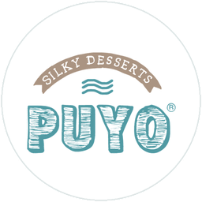

Semua
Belum dibaca
Favorit
Grup

PUYO Group
Ketik "Halo" untuk mulai
Prototype tugas Strategic Management
Kelompok 1 Branding 7C · Universitas Prasetiya Mulya
Bukan akun resmi PUYO. Data hanya tersimpan di perangkat ini.
PUYO Group
Akun bisnis